0130 秒速覽：三條路線、一張選型表
監督量從 0 到全標注排開 — 你可以從左邊起步、隨資料累積往右升級
| 論文 | 機制一句話 | 要多少標注 | 連續訊號？ | Online？ | 對「35 趟」的適配 |
|---|---|---|---|---|---|
| A1CLIP 相似度 | ~50 條 prompt 的 CLIP 相似度加權和，sigmoid 擬合＋遺傳演算法調權重 | 1 條未標注 run | ✓ 連續 | ✓ 10 Hz | 最像你的問題：水滾偵測誤差 ~1.8s。但煎蛋失敗 |
| A2CLIP linear probe | 凍結 CLIP，一層線性層做「變化前／變化後」二分類 | 3 條 run 標變化時刻 | ✗ binary | ✓ 10 Hz | 最省路線；誤差 1–7s，實機 gate 過 PR2 全流程 |
| B1SuccessVQA | 「成功了嗎?」問 VLM，微調 vision 側 | 100–200 段/任務（驗證下限） | ✗ yes/no | 1 FPS clip、8s 窗；大 VLM 推論貴 | formulation 藍圖＋換視角魯棒性論證 |
| B2GVL | 打亂幀序丟給 frozen VLM，自迴歸吐每幀完成百分比 | 0–5 條示範（in-context） | ✓ 0–100% | 分鐘級輪詢 | 唯一零訓練給連續進度；1-shot 增益大 |
| C1TeCNO | ResNet 逐幀特徵 → causal dilated TCN 兩段精煉 | 25–40 支全幀標注 | ✗ 離散 phase | ✓ causal | 量級錨點：25 支訓練就 87% Acc；防過擬合經驗齊全 |
| C2Trans-SVNet | TeCNO 上加 spatial×temporal Transformer 融合 | 27–40 支 | ✗ | ✓ 91 fps | 27 支時只 +0.3 JA——你的量級先跳過 |
| C3ProTAS | causal TCN＋GRU 進度頭，完成度 running-max gate 下一步 | ~40 支/任務標步驟邊界 | ✓ 每步 0→1 | ✓ 原生 online | 「進度 gate 狀態機」的完整 loss／decoding 設計 |
| C4VidOSC | VLM 偽標籤＋3 層 transformer 學三段式狀態 | 免逐幀標注（VLM 自標） | 3 段式 | ✗ 雙向（要改 causal） | 偽標籤管線可抄；學生贏過 VLM 老師 +9.8 F1 |
02你的問題座標
先把需求釘死，論文才有得比
- 訊號形態：理想是連續 doneness（洋蔥焦糖化到幾成），底線是可靠的離散相位轉換（「蛋已熟」翻轉一次）。
- 用途：gate 食譜 FSM 的狀態轉移——誤觸發（提早轉移）比延遲更危險，需要 hysteresis／debounce。
- 資料：~35 趟自有流程錄影，固定鏡頭、固定廚房、菜色流程固定（closed-world）——這比所有論文的設定都簡單，是你最大的優勢。
- 即時性：烹飪相位是分鐘級，1 Hz 決策頻率足夠；秒級延遲可接受。
- 預算現實：逐幀標注 35 趟不現實；標「每趟的相位邊界時刻」可行（一趟只要標幾個時間點）。
八篇正好構成一條「監督量光譜」：GVL（0 標注）→ A1（1 條未標注 run）→ A2（3 條標變化點）→ VidOSC（VLM 自動標）→ SuccessVQA／TeCNO／ProTAS（全標注微調）。以下按路線走。
03路線 ACLIP 相似度：零訓練∼一層線性層
東大 JSK 同一實驗室的兩篇，就是衝著你這個問題做的
A1 · CLIP 相似度當連續狀態訊號（arXiv 2403.08239）
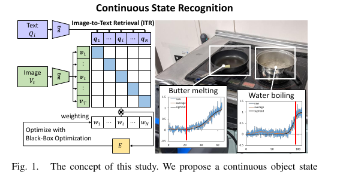
方法全文只有三個組件，都可直接抄：
- Sigmoid 擬合：把（3 秒移動平均、min-max 正規化後的）相似度曲線擬合到 f(t)=1/(1+e−α(t−β))。四種典型狀態變化曲線（持續變／後段變／前段變／S 型）sigmoid 全蓋得住，值域 (0,1) 還送你現成的閾值設計（過 0.8 = 變化完成）。
- 評價函數 E = αβ/σ：變化越陡（α）、越晚發生（β）、擬合誤差越小（σ）越好——「晚而陡」正是防止 FSM 提早觸發的目標函數。
- 遺傳演算法調 w：DEAP，300 個體 × 300 代，只需要一條未標注的 run（不用逐幀標，連變化時刻都不用標——優化的是曲線形狀不是對齊誤差）。作者試過 TPE／CMA-ES，差異不大。
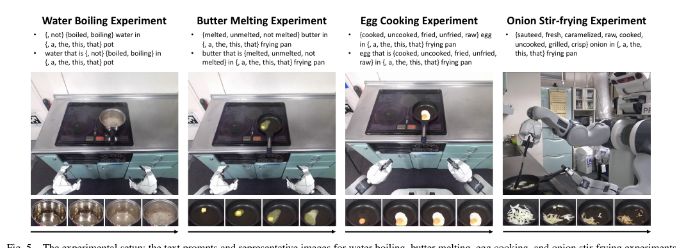
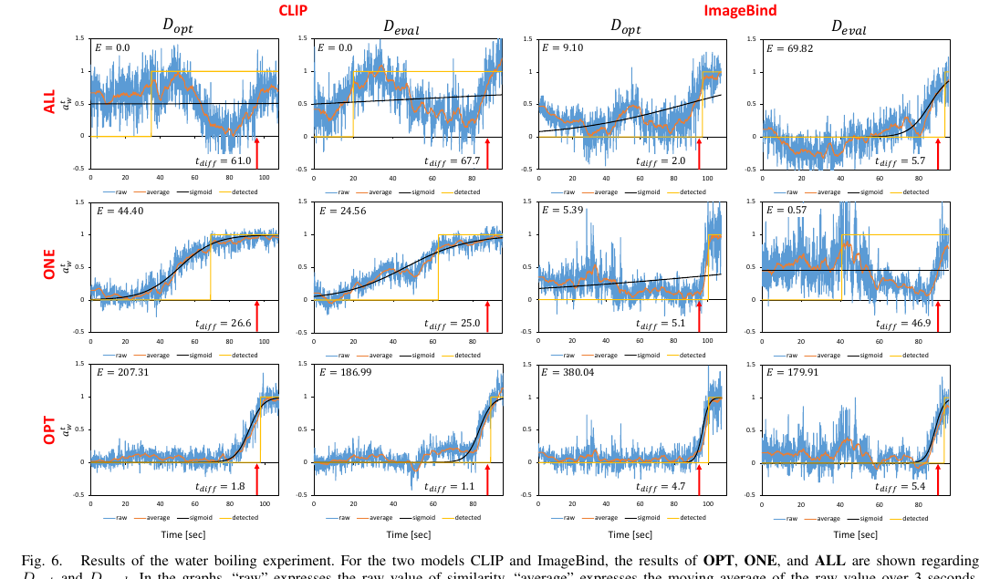
✓ 拿去用
- 50 條 prompt 模板生成法（冠詞×同反義×句式）＋ 反義句負權重
- sigmoid 擬合＋
E=αβ/σ——用你任一趟 run 就能自動選 prompt 權重 - 移動平均 3s → min-max → 過 0.8 觸發，整條訊號鏈零訓練
- ImageBind 比 CLIP 穩（D_opt/D_eval 落差小），優先試；兩者混用是作者自己點名的未來方向
✗ 坑
- 煎蛋失敗：蛋白下鍋瞬間變白（前段劇變），之後蛋黃只有微小變化——CLIP/ImageBind 都分不出後段差異。你的煮蛋問題正是這型，單靠此法不夠
- CLIP 的優化集／評估集表現有時差很大（過擬合單一 run 的光照構圖）——多留幾趟驗證
- 每個狀態一組 prompt＋權重，跨狀態不共享
A2 · CLIP linear probe gate 整套食譜 FSM（arXiv 2410.02874）
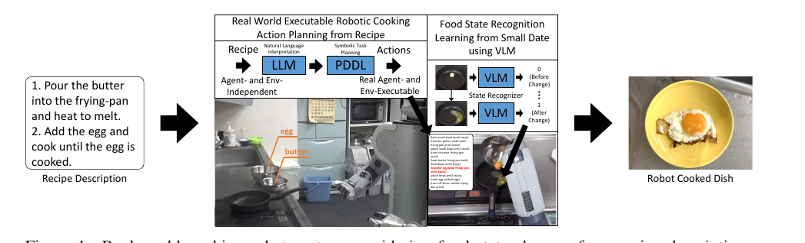
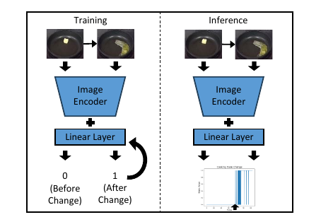
他們刻意不用 A1 的 zero-shot 相似度（理由：狀態邊界很難用文字寫準），也不用 per-run 黑箱優化（理由：不能跨 session 累積）；linear probe 每煮一次就把新資料加進訓練集，越煮越穩——這個 incremental 特性正好匹配你持續產生 run 的場景。資料效率是全場最誇張的：每種狀態變化只用 3 條 run 訓練（1 條驗證），誤差：水沸 −1.1s、奶油融化 +3.8s、蛋熟 −6.7s。前導實驗還證明 ROI 裁切是生死線：煎蛋只看鍋內 content 區誤差 +19.5s，看整個鍋直接 −66.3s（提早一分鐘誤判）。
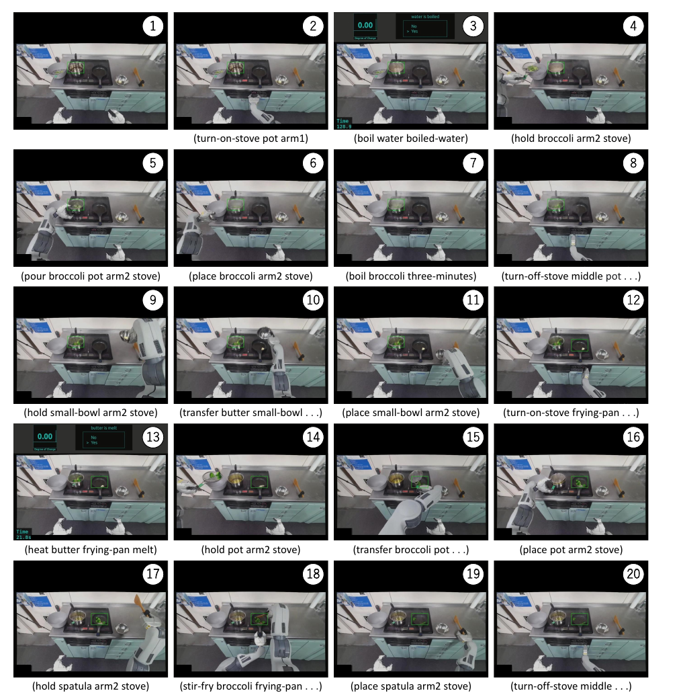
✓ 拿去用
- 最小可行方案模板：ROI 裁切 → 凍結 CLIP → 一層線性層 → 10 Hz 推論。3 條 run 起步，35 趟可以留大半當驗證
- 標注便宜到極致：每條 run 標一個時刻
- incremental：每趟煮完把資料丟回訓練集
✗ 坑
- 無 debounce：「第一個 post-change 幀即觸發」，實機發生過鍋子預熱導致 egg-cooked 一啟動就誤觸發——你必須加連續 k 幀多數決＋hysteresis
- ROI 敏感（−66s 教訓）；鍋子會動就要先偵測追蹤
- binary 不是連續訊號；每種變化一個獨立分類器，換鍋換光線要重收
- 成功率證據薄：每道菜 1 次 demo
04路線 BVLM 問答：把偵測變成 prompt 工程
監督量兩極：B1 要十萬級微調、B2 完全免訓練——但 B1 的低資料 ablation 和魯棒性證據對你有用
B1 · SuccessVQA：「成功了嗎？」（arXiv 2303.07280）
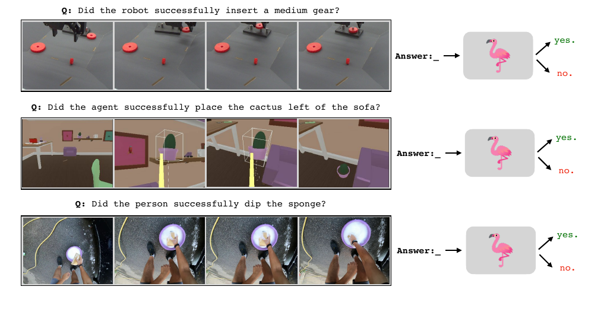
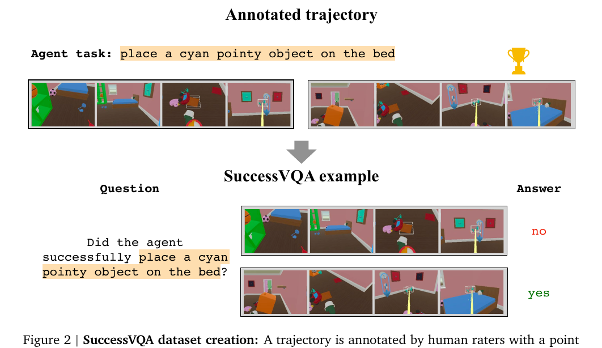
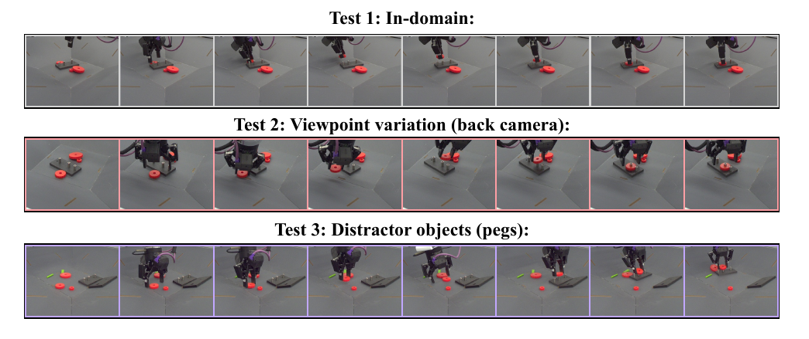
對你最有價值的數字藏在附錄的低資料 ablation：每任務只用 100–200 段（比主實驗少 100 倍）微調，FT Flamingo 在 insert-large 仍保住 93.2%（−1.8 pp）；bespoke 模型退化最慘的任務（insert-small）崩到 68.7%（−29.2 pp），六個任務中五個是 Flamingo 較抗小資料——VLM 微調在小資料下的退化遠比自訓分類器優雅。35 趟切成 clip 會膨脹成數百個 VQA 樣本，低於論文驗證的下限但不是天方夜譚。另一個要記住的負面結果：當年的 Flamingo 3B 不微調 = 亂猜（IA Playroom 三個測試集全 50%、Ego4D 零樣本 50%）——但這是 2023 年的 3B 模型，2026 年的 frontier VLM 應先跑 zero-shot 基線再決定。
B2 · GVL：打亂幀序，讓 VLM 吐進度百分比（arXiv 2411.04549）
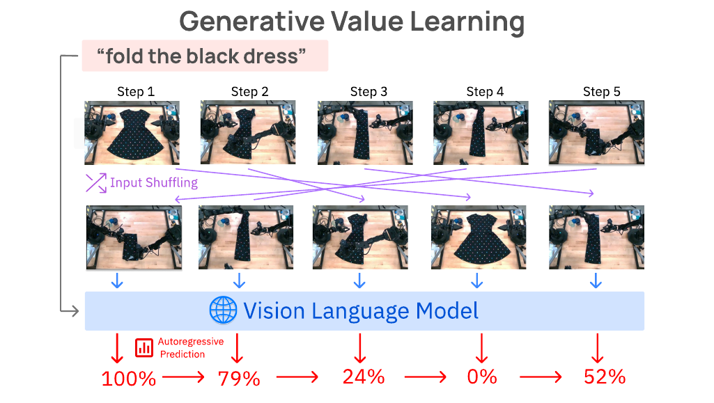
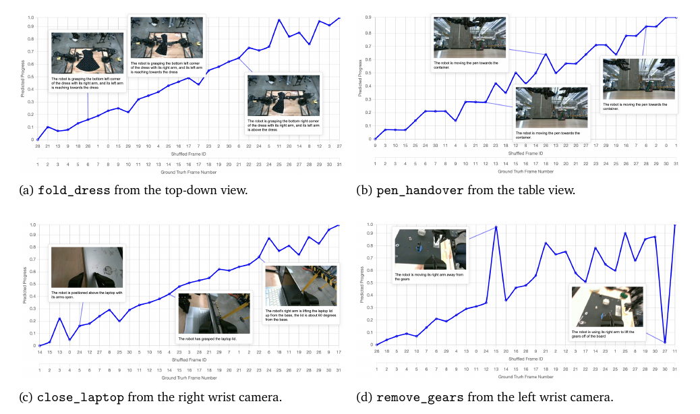
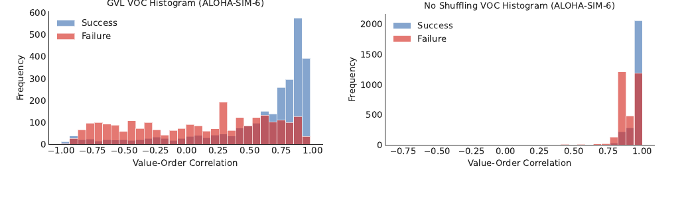
✓ 拿去用
- 唯一零訓練給連續進度的方法：sliding buffer 抽 30 幀 → shuffle → 問百分比 → un-shuffle 取最新幀值 gate FSM
- 資料效率完美匹配：1 條 in-context 示範把 ALOHA median VOC 從 0.12 拉到 0.37、90% 為正；5 條還在漲。35 趟裡挑 1–3 條標好進度當 few-shot 庫綽綽有餘
- 人類徒手示範也能當 example（0.36→0.44）——你自己用手煮的影片就能教它
- VOC 當 run 級品質分：自動篩好示範
✗ 坑
- 每次查詢送 30 張圖給 API：延遲數秒、有成本——分鐘級輪詢可行，sub-second 反應不行
- 百分比的絕對刻度沒保證（VOC 只驗排序）：gate 門檻要自己用幾條 run 校準
- 週期性動作（翻炒攪拌）幀序不唯一，VOC 這個指標直接失效——攪拌型狀態用計時器，doneness 型（蛋凝固、洋蔥變色）才是 GVL 甜蜜點
- 要寫 VLM 拒答／格式跑掉的 parsing fallback
05路線 C自訓小時序模型：幾十支影片的驗證配方
手術 phase recognition 就是你的問題換了個廚房——80 支影片等級、frame-level 監督、online 推論，配方已被醫療圈磨了五年
C1 · TeCNO：兩段式解耦＋causal TCN（MICCAI 2020）
手術 phase recognition 與烹飪 FSM gating 同構：連續影像流 → 逐幀相位估計 → gate 下一步；相位邊界模糊（半熟→全熟 ≈ 手術相位過渡）；類別不平衡（「剛變金黃」跟短相位 P5/P7 一樣稀有）；都要 online。TeCNO 的配方：
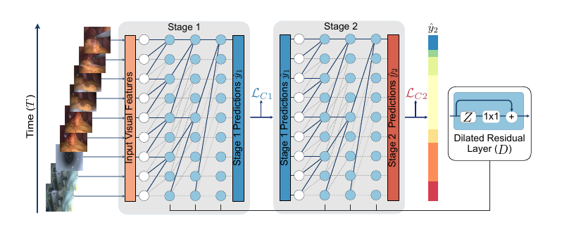
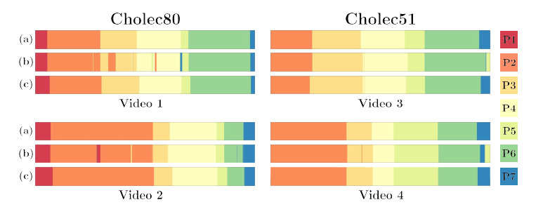
三條對小資料最值錢的經驗：(1) 加一個 TCN stage 就 +6% Acc（82.2→88.4），時間平滑是最便宜的提升；(2) 第三個 stage 反而掉 2%——作者推測是有限資料下的過擬合，你應該鎖兩段；(3) 類別不平衡用 median frequency balancing 的 weighted CE。訓練配方：Adam、lr 5e-4、25 epochs、一支影片一個 batch、單張 12GB GPU。
C2 · Trans-SVNet：什麼時候不值得升級（MICCAI 2021）
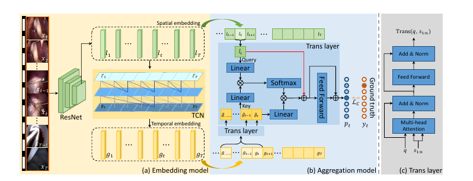
對你的判決直接明瞭：35 趟的量級先跑 TeCNO 等價物，Transformer 融合層留作資料變多後的便宜升級（僅 ~30k 參數）。另外把它的評測紀律抄走：video-level split（絕不能 frame-level split，否則 35 趟的數字會嚴重虛高）、per-video mean±std、相位平均的 Precision/Recall/Jaccard。
C3 · ProTAS：進度訊號 gate 狀態機的完整設計（CVPR 2024）
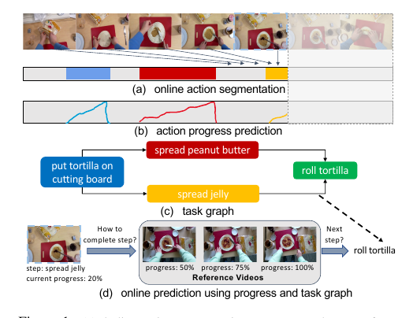
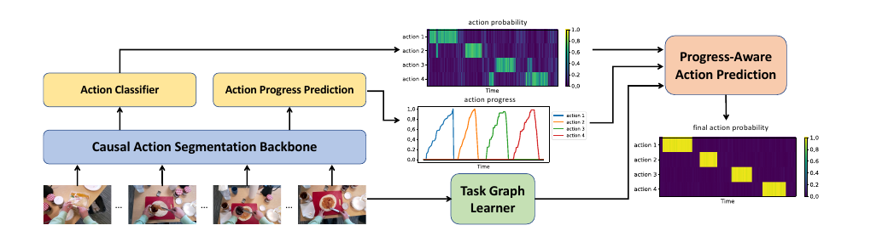
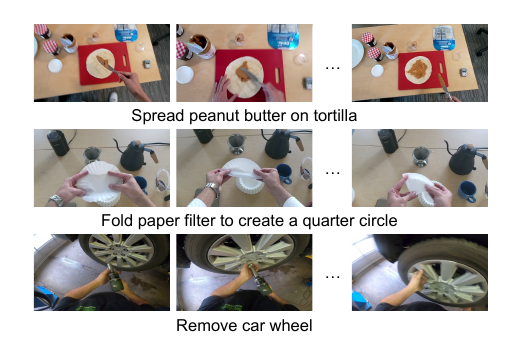
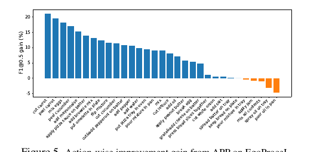
C4 · VidOSC：不想逐幀標注？讓 VLM 當標注員（CVPR 2024）
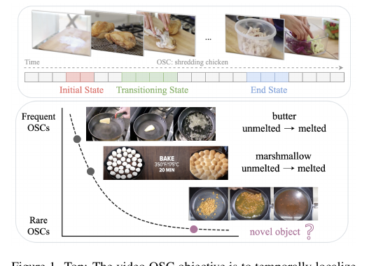
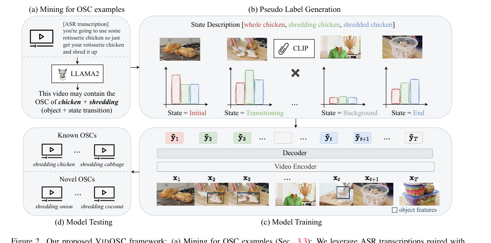
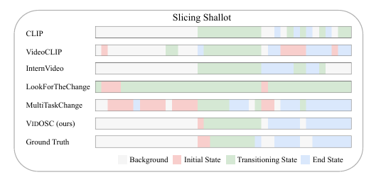
兩個對你的警告：模型是雙向 attention 的 offline 模型，要 online 得自己改 causal（論文沒做，效能損失未知）；且漸變類正是它最弱的（melting F1 34.9、sauteing novel 36.4，vs 表現最好的 mashing／squeezing／grilling 類 52–55）——蛋和洋蔥又是這型。
06橫向對照與組合建議
三條路線不互斥——它們分別解「起步、上線、進化」三個階段
| ACLIP 相似度／probe | BVLM 問答 | C自訓時序模型 | |
|---|---|---|---|
| 標注成本 | 0～每狀態 3 個時刻 | 0（GVL）～百段級（SuccessVQA 微調） | 每趟標相位邊界（C4 可用 VLM 代標） |
| 訊號品質 | 連續但抖，靠 sigmoid／平滑救；「後段劇變」型最進 | GVL 給真正的語意進度；批次查詢才可靠 | 最平滑最穩（causal TCN 本職），per-video std ±7–9% 仍在 |
| 即時性 | 10 Hz 本機 | 分鐘級 API 輪詢 | 1 fps 決策；桌面 2080 Ti 實測 91 fps |
| 泛化 vs 專用 | 每狀態一組 prompt／分類器，換場景重調 | 換視角掉 ≤8pp、加雜物不動（B1 實測） | 固定鏡頭前提，換場景要重訓 |
| 對「蛋型難題」 （前段劇變後段平緩） | A1 明確失敗；A2 靠 ROI 裁切救部分 | GVL 未測蛋，doneness 單調型理論上是甜蜜點 | C4 顯示漸變類最弱；C3 的進度目標是純時間 ramp，doneness 需自行改成狀態錨定標籤（本文建議） |
| 成熟度證據 | 實機 PR2 全流程 demo（各 1 次） | 300+ 任務 VOC 統計（GVL）；50–60k episodes 評測（B1） | 五年醫療落地線、多資料集 SOTA 傳承 |
07跨論文的四個共同教訓
八篇各自獨立發現、卻互相印證的事
08行動方案：35 趟資料怎麼花
三階段，每階段都有可用產出，前一階段變成後一階段的標注工具
ROI 裁到鍋內 → A1 的 50-prompt CLIP/ImageBind 相似度＋sigmoid 擬合（1 趟 run 優化權重）跑所有狀態；同時用 frontier VLM 做 GVL 式 shuffle 進度查詢（挑 1–3 趟標好進度當 few-shot）。產出：每個狀態的可用性地圖——哪些狀態 zero-shot 就夠（水沸型），哪些不行（蛋型）。
對 zero-shot 不夠的狀態：每狀態標 3 趟的變化時刻，CLIP linear probe，10 Hz 推論。必加兩件 A2 沒做的事：連續 k 幀多數決＋hysteresis、開火前的 warm-up 遮蔽（避開它的預熱誤觸發）。留 5–7 趟純驗證、video-level split。產出：能 gate FSM 的離散轉換訊號。
用 A1/B2 的訊號＋人工校正產生相位邊界標注（C4 的雙閾值＋ordering 規則自動化大半），在凍結特徵上訓兩段 causal TCN（C1 配方：median freq balancing、兩段就好）＋ GRU 進度頭與 running-max completion gate（C3 設計）。進度標籤用狀態錨定里程碑（0/0.5/1 插值）而非純時間 ramp。產出：連續進度＋平滑相位，單 edge GPU 即時。
每趟新 run 回灌訓練集（A2 的 incremental）；B2 的 VOC 自動評每趟品質、篩好示範；VLM 保留當低信心幀的仲裁者（B1 的魯棒性保險）。蛋型狀態若始終不穩：接受視覺的極限，上計時器/溫度探針做 sensor fusion——A1 作者自己也點名 audio/heatmap 是下一步。